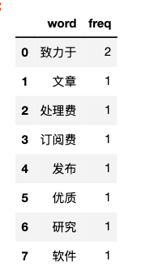
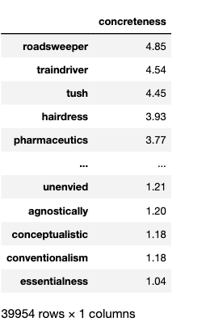
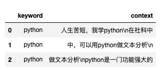
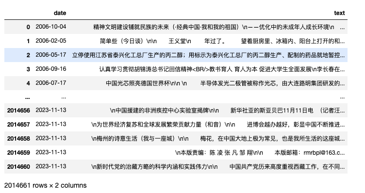
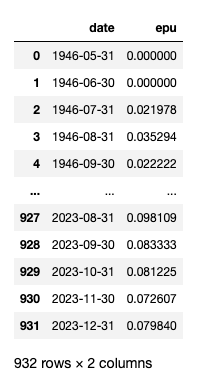
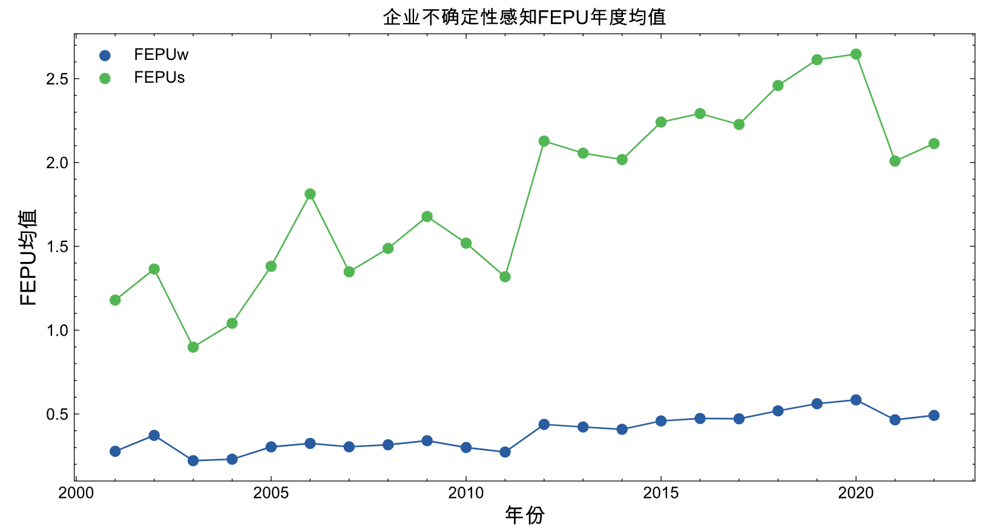
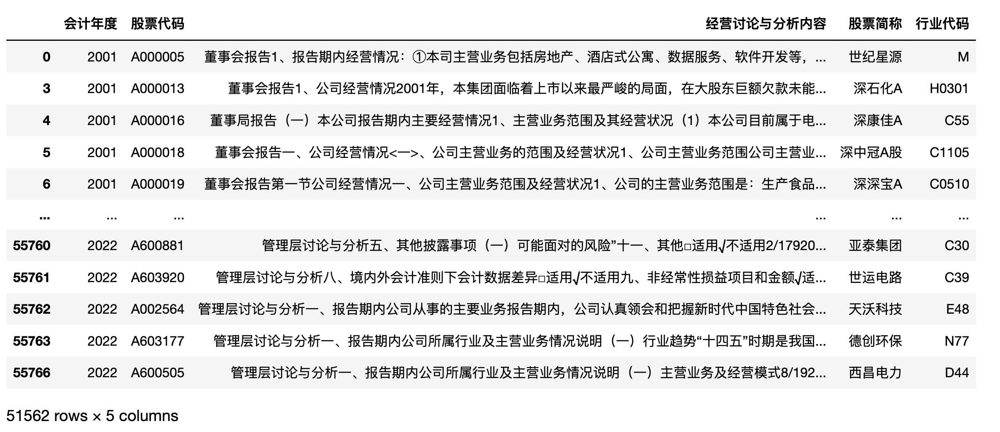
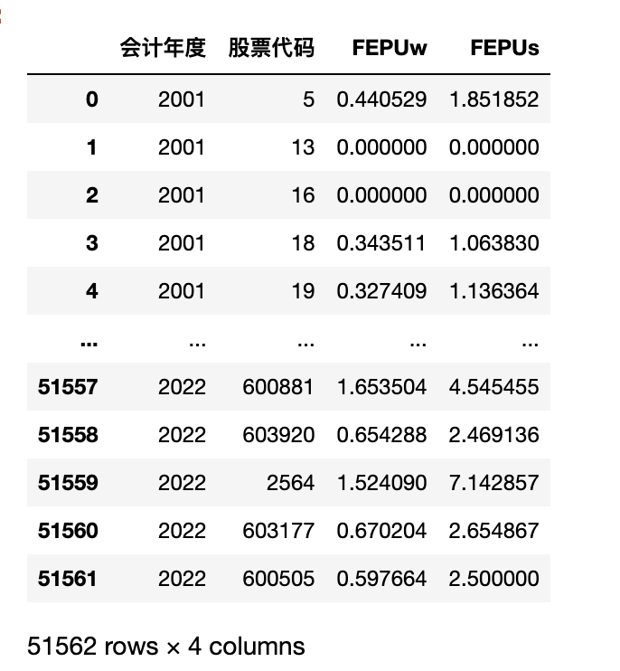
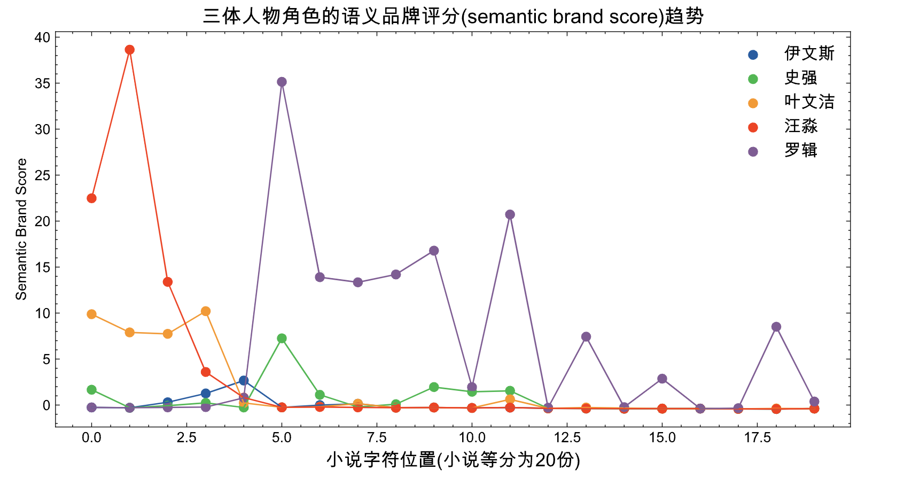
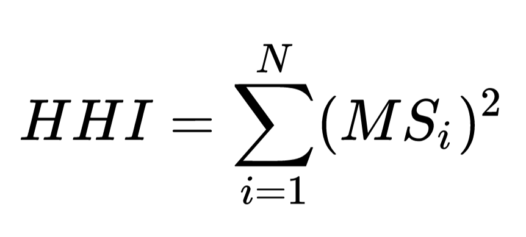

二、Stats模块¶
模块 |
函数 |
功能 |
|---|---|---|
stats |
|
词频统计 |
stats |
|
文本可读性 |
stats |
ct.sentiment(text, diction, lang='chinese') |
无(等)权重词典的情感分析 |
stats |
|
带权重的词典的情感分析 |
stats |
ct.word_in_context(text, keywords, window=3, lang='chinese') |
在text中查找keywords出现的上下文内容(窗口window)，返回df |
stats |
ct.epu(text, e_pattern, p_pattern, u_pattern) |
使用新闻文本数据计算经济政策不确定性EPU，返回df |
stats |
ct.fepu(text, ep_pattern='', u_pattern='') |
使用md&a文本数据计算企业不确定性感知FEPU |
stats |
ct.semantic_brand_score(text, brands, lang='chinese') |
衡量品牌（个体、公司、品牌、关键词等）的重要性 |
stats |
ct.cosine_sim(text1, text2, lang='chinese') |
余弦相似度 |
stats |
|
Jaccard相似度 |
stats |
|
最小编辑距离 |
stats |
|
文本的赫芬达尔-赫希曼指数 |
2.1 word_count()¶
统计词频， 返回Counter(类似于python字典) ； 支持中英文
ct.word_count(text, lang='chinese', return_df=False)
text 待分析的文本字符串
lang 文本的语言类型， 中文chinese、英文english，默认中文。
return_df 返回结果是否为dataframe，默认False
import cntext as ct
text = '致力于致力于以零文章处理费或订阅费发布优质研究软件。'
# ct.word_count(text, lang='chinese')
ct.word_count(text)
Run
Counter({'致力于': 2,
'文章': 1,
'处理费': 1,
'订阅费': 1,
'发布': 1,
'优质': 1,
'研究': 1,
'软件': 1})
ct.word_count(text, return_df=True)

2.2 readability()¶
ct.readability(text,
lang='chinese',
syllables=3,
return_series=False)
计算文本可读性常见指标； 含 Gunning Fog Index、 SMOG Index、Coleman Liau Index、 Automated Readability Index(ARI)、Readability Index(Rix) ； 指标越大，复杂度越高，文本的可读性越差。
text 待分析的文本字符串
lang 文本的语言类型， 中文chinese、英文english，默认中文。
syllables 音节数(汉字数)大于等于syllables为复杂词. 默认值为3
return_series: 计算结果是否输出为pd.Series类型，默认为False
Gunning Fog Index = 0.4 * (Total_Words/Total_Sentences + 100 * Complex_Words/Total_Words)
SMOG Index = 1.0430 * sqrt(Complex_Words/Total_Sentences) * 30 + 3.1291
Coleman-Liau Index = 0.0588 * (100*Total_Letters/Total_Words) -0.296*(100*Total_Sentences/Total_Words) - 15.8
Automated Readability Index(ARI) = 4.71 * (Total_Characters/Total_Words) + 0.5*(Total_Words/Total_Sentences) - 21.43
Readability Index(RIX) = Complex_Words * (6 + Total_characters) / Total_Sentences
import cntext as ct
text = '致力于以零文章处理费或订阅费发布优质研究软件。'
ct.readability(text, lang='chinese', syllables=3)
Run
{'fog_index': 120.4,
'flesch_kincaid_grade_level': 20.2,
'smog_index': 57.32,
'coleman_liau_index': 83.96,
'ari': 87.4,
'rix': 87.0}
2.3 sentiment(text, diction, lang)¶
常见的情感分析默认情绪词无(等)权重， 通过统计词语个数来反应情感信息。
ct.sentiment(text, diction, lang='chinese', return_series=False)
text 待分析的文本字符串
diction 格式为Python字典类型。形如下面的案例
lang 文本的语言类型， 中文 'chinese' 、英文 'english' ，默认中文。
return_series 计算结果是否输出为 pd.Series 类型，默认为 False
import cntext as ct
diction = {'pos': ['高兴', '快乐', '分享'],
'neg': ['难过', '悲伤'],
'adv': ['很', '特别']}
text = '我今天得奖了，很高兴，我要将快乐分享大家。'
ct.sentiment(text=text,
diction=diction,
lang='chinese')
Run
{'pos_num': 3,
'neg_num': 0,
'adv_num': 1,
'stopword_num': 8,
'word_num': 14,
'sentence_num': 1}
2.4 sentiment_by_valence()¶
ct.sentiment_by_valence(text,
diction,
lang='chinese',
return_series=False)
text 待分析的文本字符串
diction 格式为Python字典类型。形如下面的案例
lang 文本的语言类型， 中文chinese、英文english，默认中文。
return_series 计算结果是否输出为pd.Series类型，默认为False
常见的情感分析是无(等)权重, 但实际上不同的词语所携带的情感信息的强度差异是很大的。据此学者们开发出很多带权重的词典，例如
英文具体性词典 en_valence_Concreteness.yaml ， 词典中每个词都有一个concreteness值
中文六维度语义词典 zh_valence_SixSemanticDimensionDatabase.yaml ， 每个中文词有六个值。
以具体性为例， 语言具体性 Concreteness 描述了一个词在多大程度上是指一个实际的、有形的或“真实的”实体，以一种更具体、更熟悉、更容易被眼睛或心灵感知的方式描述对象和行为（即，可想象或生动；Brysbaert, Warriner, and Kuperman 2014; Semin and Fiedler 1988)
import cntext as ct
import pandas as pd
concreteness_dict = ct.read_yaml_dict('en_valence_Concreteness.yaml')['Dictionary']
concreteness_dict
Run
{'roadsweeper': {'concreteness': 4.85},
'traindriver': {'concreteness': 4.54},
'tush': {'concreteness': 4.45},
'hairdress': {'concreteness': 3.93},
'pharmaceutics': {'concreteness': 3.77},
'hoover': {'concreteness': 3.76},
'shopkeeping': {'concreteness': 3.18},
'pushiness': {'concreteness': 2.48},
......
}
可能 concreteness_dict 不够直观， 如果整理转化一下大概类似于

JCR2021 | 计算文本的语言具体性 文中提供了一个案例
reply = "I'll go look for that"
score=ct.sentiment_by_valence(text=reply,
diction=concreteness_dict,
lang='english')
score
Run
{'concreteness': 9.28,
'word_num': 6}
employee_replys = ["I'll go look for that",
"I'll go search for that",
"I'll go search for that top",
"I'll go search for that t-shirt",
"I'll go look for that t-shirt in grey",
"I'll go search for that t-shirt in grey"]
for idx, reply in enumerate(employee_replys):
score=ct.sentiment_by_valence(text=reply,
diction=concreteness_dict,
lang='english')
template = "Concreteness Score: {score:.2f} | Example-{idx}: {exmaple}"
print(template.format(score=score['concreteness'],
idx=idx,
exmaple=reply))
Run
Concreteness Score: 9.28 | Example-0: I'll go look for that
Concreteness Score: 9.32 | Example-1: I'll go search for that
Concreteness Score: 13.25 | Example-2: I'll go search for that top
Concreteness Score: 14.25 | Example-3: I'll go search for that t-shirt
Concreteness Score: 21.32 | Example-4: I'll go look for that t-shirt in grey
Concreteness Score: 21.36 | Example-5: I'll go search for that t-shirt in grey
2.5 word_in_context()¶
You shall know a word by the company it keeps通过一个单词所处的语境，我们可以了解该单词的含义。
在text中查找keywords出现的上下文内容(窗口window)，返回df。
ct.word_in_context(text, keywords, window=3, lang='chinese')
text 待分析文本
keywords 关键词列表
window 关键词上下文窗口大小
lang 文本的语言类型， 中文chinese、英文english，默认中文。
import cntext as ct
# 测试代码，假设zh_text是年报文本，从找找出丝网词相关词的上下文
zh_text = """
【插入一条自家广告】大邓自己家的家，
安平县多隆丝网制品，生产销售不锈钢轧花网、
电焊网、石笼网、刀片刺绳、冲孔网等丝网制品。
联系人 邓颖静 0318-7686899
人生苦短，我学Python
在社科中，可以用Python做文本分析
Python是一门功能强大的编程语言，广泛应用在经管社科领域。
可以做网络爬虫、文本分析、LDA话题模型、相似度分析等。
今年经济不景气，形势异常严峻。
由于疫情不景气，静默管理， 产品积压， 公司经营困难。
保就业促就业，任务十分艰巨。
"""
#【python】上下文
ct.word_in_context(text = zh_text,
keywords = ['python'],
window=10,
lang='chinese')

2.6 epu()¶

ct.epu(df, freq='Y', e_pattern='', p_pattern='', u_pattern='')
df 新闻数据DataFrame， 含text和date两个字段。 每一行代表一条新闻记录
freq 字符串， 确定EPU指数的时间颗粒度； 如年Y, 月m, 日d, 默认 freq='Y'
e_pattern 字符串，经济类词典，用
|间隔词语，形如 e_pattern = "经济|金融"p_pattern 字符串，政策词典，用
|间隔词语，形如 p_pattern = "政策|治理|行政"u_pattern 字符串，不确定性词典，用
|间隔词语，形如 u_pattern = "风险|危机|难以预测"
准备如下图格式的数据 news_df

import cntext as ct
#省略，读取数据得到 news_df
epu_df = ct.epu(df=news_df, freq='m')
epu_df

2.7 fepu()¶
使用管理层讨论与分析文本数据测量「企业感知不确定性」(Subjective perception of economic policy uncertainty, FEPU)

ct.fepu(text, ep_pattern, u_pattern)
text 某时期 t 某企业 i 的管理层讨论与分析 md&a 文本
ep_pattern 字符串，经济政策类词典，用
|间隔词语，形如 ep_pattern = "经济|金融|政策|治理|行政"u_pattern 字符串，不确定性词典，用
|间隔词语，形如 u_pattern = "风险|危机|难以预测"
准备如下图格式的数据 mda_df

import cntext as ct
# 省略，读取数据得到 mda_df
fepu_df = df['经营讨论与分析内容'].apply(ct.fepu)
res_df = pd.concat([df[['会计年度', '股票代码']], fepu_df], axis=1)
res_df

2.8 semantic_brand_score()¶
文献&代码 | 使用Python计算语义品牌评分(Semantic Brand Score, SBS) ， 通过 SBS 来衡量品牌（个体、公司、品牌、关键词等）的重要性。
ct.semantic_brand_score(text, brands, lang='chinese')
text 待分析文本
brands 词语列表；
lang 语言类型，"chinese"或"english"，默认"chinese"
以三体小说为例，通过测量品牌语义评分SBS来反映小说角色的重要性。
import cntext as ct
brands = ['汪淼', '史强', '罗辑', '叶文洁', '伊文斯']
#准备santi_test_text
#小说等分20份， 读取第一份得到santi_test_text
sbs_df = ct.semantic_brand_score(text=santi_test_text,
brands=brands,
lang='chinese')
sbs_df

如果将三体小说分成20份， 每一份都测算出每个角色的SBS，绘制出折线图如下图所示。

2.9 文本相似度¶
ct.cosine_sim(text1, text2, lang='chinese') cos余弦相似
ct.jaccard_sim(text1, text2, lang='chinese') jaccard相似
ct.minedit_sim(text1, text2, lang='chinese') 最小编辑距离相似度
ct.simple_sim(text1, text2, lang='chinese') 更改变动算法
算法实现参考自
Cohen, Lauren, Christopher Malloy, and Quoc Nguyen. Lazy prices. No. w25084. National Bureau of Economic Research, 2018.
import cntext as ct
text1 = '编程真好玩编程真好玩'
text2 = '游戏真好玩编程真好玩'
print('cosine', ct.cosine_sim(text1, text2, lang='chinese'))
print('jaccard', ct.jaccard_sim(text1, text2, lang='chinese'))
print('minedit', ct.minedit_sim(text1, text2, lang='chinese'))
print('simple', ct.simple_sim(text1, text2, lang='chinese'))
Run
cosine 0.82
jaccard 0.67
minedit 1.00
simple 0.84
import cntext as ct
text1 = 'Programming is fun!'
text2 = 'Programming is interesting!'
print('cosine', ct.cosine_sim(text1, text2, lang='english'))
print('jaccard', ct.jaccard_sim(text1, text2, lang='english'))
print('minedit', ct.minedit_sim(text1, text2, lang='english'))
print('simple', ct.simple_sim(text1, text2, lang='english'))
Run
cosine 0.67
jaccard 0.50
minedit 1.00
simple 0.78
2.10 word_hhi¶
文本的赫芬达尔-赫希曼指数。
ct.word_hhi(text, lang='chinese')
赫芬达尔-赫希曼指数(Herfindahl-Hirschman Index)作为一种衡量市场集中度的经济指标，通常用于分析产业或市场中企业份额的分布情况。

前人类比市场集中程度，用于测量专利质量(知识宽度)。 那放在文本语言中，我们是否可能利用HHI来量化某个语料库中不同词汇的使用频率分布，以此来分析个人、群体或时代的语言风格、词汇丰富度、或是语言标准化与变化的趋势。
如果词汇分布非常均匀，表明语言使用中的词汇多样性高，HHI值就会较低；
反之，如果少数词汇占据了大部分文本空间，表明词汇使用集中，HHI值则较高。
结合其他语言学指标一起使用，比如TTR（Type-Token Ratio，类型-标记比率）、Shannon entropy（香农熵）等，共同评估语言表达的复杂度和多样性。不过，这类研究的文献相对较少，因为语言学领域有自己一套成熟且专业的分析工具和方法，HHI更多地被视为跨学科应用的一个创新尝试。
import cntext as ct
personA = '这场音乐会太嗨了'
personB = '这场音乐会说出来令你不敢相信，主办方策划有方，群众激情满满，我印象深刻，体验感拉满'
print('A-hhi', ct.word_hhi(personA))
print('B-hhi', ct.word_hhi(personB))
print('A词汇多样性', 1 - ct.word_hhi(personA))
print('B词汇多样性', 1 - ct.word_hhi(personB))
Run
A-hhi 0.20000000000000004
B-hhi 0.07024793388429751
A词汇多样性 0.7999999999999999
B词汇多样性 0.9297520661157025